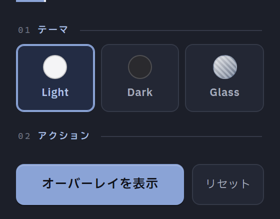

3 ステップで隠す
開く・選ぶ・表示する。それ以上の手順を増やしません。
Screen overlayChrome / MV3
ページの一部をオーバーレイで覆うだけ。ネタバレを避けたいとき、離席するとき、画面共有中に見せたくない領域があるときに使えます。

OVERLAY SPEC
スクリーンカーテンの仕様
完全に覆い隠したいときは Light / Dark、下に何かあることは分かる程度にしたいときは Glass を選びます。
ツールバーのアイコンからポップアップを開きます。
Light / Dark / Glass から選択。Glass ではぼかし強度も決められます。
「オーバーレイを表示」を押し、ドラッグとリサイズで隠したい範囲に合わせます。
FEATURES
位置・サイズ・テーマは自動で保存されます。いつも同じ場所を隠すなら、次からは表示ボタンを押すだけで済みます。
対象と処理の一覧
| 項目 | 設定 | 状態 |
|---|---|---|
| テーマ | Glass | ACTIVE |
| ぼかし強度 | スライダーで調整 | SET |
| 位置 / サイズ | 前回の状態 | SAVED |
| 閉じる | 右上の × ボタン | CLOSE |
STORAGE
chrome.storage.local
device only
設定は端末内にのみ保存され、外部へは送信されない
DESIGN PRINCIPLES
開く・選ぶ・表示する。それ以上の手順を増やしません。
位置とサイズを保存するので、毎回の調整が要りません。
外部サーバーとの通信を一切行わず、端末内で完結します。
INSTALL
Chrome / Edge / Brave などの Chromium 系ブラウザに対応。MIT License。